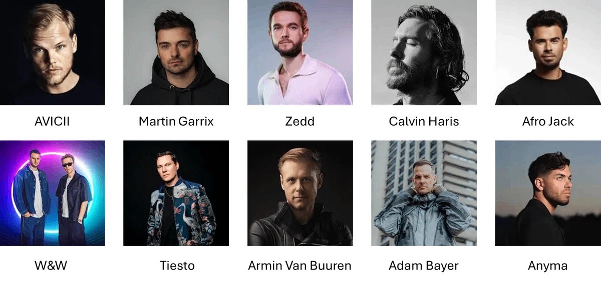
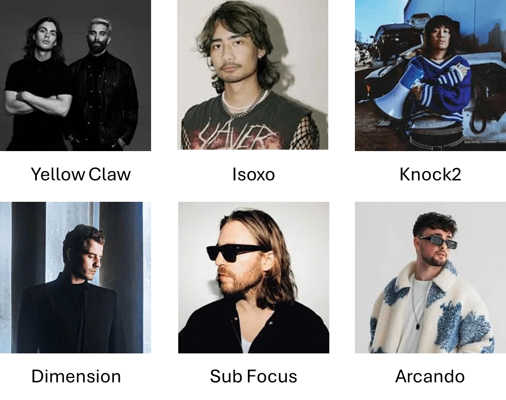

最初にぶつかる、
“大きな壁”
ダンスミュージックを作り始めた人の多くが、最初にぶつかる“大きな壁”があります。
- 「どうすれば“ミックスで抜けるキック”を作れるのか？」
- 「どうすれば4小節の土台を作って曲を前に進められるのか？」
一見シンプルに見えますが、これはダンスミュージックにおいて最も重要な問題です。
しかも厄介なのは、多くの人がこの問題に気づかないまま作り続けてしまうこと。
DTM歴が長くても完成できない人の多くは、キックが前に出ていなかったり、存在感が曲に負けていたり、 そもそも4小節ループが成立していないという“根本的な問題”を抱えています。
多くの人は、それを問題だとすら認識できません。
なぜなら低域とループ構造は、聴き慣れるほど“正常に聴こえてしまう”から。
問題は、“最初の1音”だった
私もまったく同じでした。
当時の私は、キックが埋もれていることにも気づかず、4小節が不安定で、判断基準もない状態。 それでも「メロディが弱いのかな」「音色が悪いのかな」と、ズレた努力ばかりを続けていた。
でも、あるとき気づきます。
- EQをしなくても抜けるようになった
- ベースともぶつからなくなった
- ループも一気に安定した
ここで初めて理解しました。
抜けるキックは“最初から抜けている”。
抜けないキックは、何をしても抜けない。
だから最初にやるべきことはひとつ。キックを正しく“選ぶ”ことです。
この STEP でやること
キックの構造を理解する
Click / Body / Tail の3要素で見分けられるようにする。
ジャンルごとの違いを理解する
打ち方だけでジャンルが決まることを知る。
キックを見分けられる状態になる
自分のキックを、構造で判断できるようにする。
※ 配置や4小節ループの作成は、次の STEP（2-2 / 2-3）で行います。ここは「理解」のフェーズです。
キックの構造を理解する
ローエンドの8割は、最初の1音で決まる
あなたはキックをどんな基準で選んでいるでしょうか。
NG ── よくある選び方
こう選んでいないか
- なんとなく良さそうなもの
- Splice で上に出てきたもの
- 誰かが使っていたもの
- 海外チュートリアルで見たもの
その結果
こうなる
- EQを足しても抜けない
- サブを足すと濁る
- ミックスが泥沼になる
- サイドチェインで誤魔化そうとする
- 何もかもうまくいかない
私も昔、Kickを30個ほど並べて「どれも同じじゃないか」と悩んでいました。 でもプロのキックと比べてみると、明らかに違う。音の説得力がまるで違うんです。
抜けるキックは“加工前から”抜けている。
キックを“選ぶ”ことが制作のスタートだと、ここで初めて理解しました。
キックは Click・Body・Tail の3要素でできている
これは単なるチェック項目ではなく、その音の“性格”そのものです。

Click
2〜4kHz ／ 音の顔強ければ前に出る。弱ければ輪郭がぼやける。
- 強い
- 前に出る・アタック感
- 弱い
- 輪郭がぼやける
「ドン」判定：ド がはっきり聞こえる
Body
120〜200Hz ／ 骨格太ければ音は立ち、弱ければ全体が痩せる。
- 強い
- 曲に重量感が生まれる
- 弱い
- どこまで足してもスカスカ
「ドン」判定：オ が太く聞こえる
Tail
40〜60Hz ／ 呼吸長ければ深く沈み、短ければタイトに切れる。
- 長い
- 深く・包み込む低域
- 短い
- BPMと合わないと低域が遅れる
「ドン」判定：ン が残る
重要なのは、この3つのバランスでジャンルが決まるということを知ること。
構造が理解できれば、手順①はクリアです。
ジャンルごとのキックを理解する
キックの打ち方だけで、ジャンルは読めてしまう
3要素のバランスが変わると、ジャンルが変わります。例えば ──
- メロディックテクノ → Body強め / Tail長め
- テックハウス → Click強め / タイト
キックは“構造”で選ぶものです。
キックの「並べ方」そのものがジャンルを決めている
あなたが4小節にキックをどう配置するか。その時点で、曲のジャンルはほぼ決まります。
プロデューサーもリスナーも「キックの打ち方」だけでジャンルを判断しているから。
レイヤーもFXもコードも関係ありません。キックの打ち方だけで、ジャンルは読めてしまう。
4つ打ち
BPM 120〜130 House / Techno / EDM1小節に4発、均等に刻む。世界中のダンスフロアを支えてきた“最も普遍的な構造”。ダンスミュージックだと BPM128 が一番ポピュラー。このロードマップで使う基本パターン。

代表アーティスト：AVICII ／ Martin Garrix ／ Zedd ／ Calvin Harris ／ Afrojack ／ W&W ／ Tiësto ／ Armin van Buuren ／ Adam Beyer ／ Anyma
2つ打ち
BPM 140〜150 Future Bass / Dubstep1小節に2発だけ。ドラムが半分の速度に聞こえる、重心の低いグルーヴ。中毒性のある激しい音楽。→ 参考として把握しておく。
代表アーティスト：Skrillex ／ Illenium ／ DJ Snake ／ Marshmello ／ Virtual Riot ／ Don Diablo
変則キック
BPM 140〜175 Trap / Drum & Bass3拍目裏に置いたり、キックの間隔を崩してグルーヴを作る。特にドラムンベースは近年、世界の大型フェスでもメインステージを張るジャンルに。→ 参考として把握しておく。

代表アーティスト：Yellow Claw ／ Isoxo ／ Knock2 ／ Dimension ／ Sub Focus ／ Arcando
この2つは同じプロデューサーの中でも楽曲ごとに切り替えているケースが多く、完全にジャンルを分けることができません。
だからこそ、「あのアーティストのあの曲を目指す」という方向性が一番ゴールにたどり着きやすいと、トリケラは考えています。
どこにキックを置くかで、ジャンルは決まる。
そしてこのロードマップでは、ダンスミュージックの基礎である4つ打ちで楽曲制作を進めていきます。
ジャンル別 キックバランス早見表
3要素の配分で、ジャンルのキックの性格が決まります。
| ジャンル | Click | Body | Tail | 一言 |
|---|---|---|---|---|
| Melodic Techno | ★★★★★ | ★★★★★ | ★★★★★ | 深く・太く・包み込む |
| House | ★★★★★ | ★★★★★ | ★★★★★ | 丸くて太くて安定 |
| Deep House | ★★★★★ | ★★★★★ | ★★★★★ | 低く・柔らかく・沈む |
| Tech House | ★★★★★ | ★★★★★ | ★★★★★ | タイトで前に出る |
| Progressive House | ★★★★★ | ★★★★★ | ★★★★★ | バランス型 |
| Hard Techno | ★★★★★ | ★★★★★ | ★★★★★ | 硬く・速く・前に出る |
※ 緑の行が、このロードマップで進める Melodic Techno です。
動画で、ジャンルごとの違いを聴き分ける
表とスライドで整理した内容を、実際の音で解説しています。 これを知らないままだと、間違ったまま楽曲制作を進めてしまいます。
【知らないとヤバい】ジャンルに合った正しいキックの選び方 ── Click / Body / Tail の配分が、ジャンルごとにどう変わるかを実音で確認できます。
ジャンルが変わっても考え方は同じ。変わるのは3要素の比重だけです。
ジャンルごとの打ち込みの違いが分かれば、手順②はクリアです。
この STEP で手に入れたもの
- キックの構造（Click / Body / Tail）を理解した
- ジャンルごとの打ち込みの違いを理解した
- キックを見分けられる状態になった
この STEP を見ただけでも大きな進歩です。
ただ、ここで多くの人が止まります。
「どれを選べばいいのか分からない」
それはスキル不足ではありません。
“選び方”を知らないだけです。
キック選びで重要なのは、
NG
こうではない
- なんとなく選ぶこと
- 有名なサンプルを使うこと
OK
これが正解
- 構造で判断する
- 比較する
- 1つに決める
理解ではなく、
“選択”のフェーズへ
次の STEP では、こうしていきます。
キックを5つに絞る
候補を一気に減らす。
構造で評価する
Click / Body / Tail で並べて比べる。
最終的に1つに決める
迷わず決めるための手順を実際にやる。
ここからは、理解ではなく “選択” のフェーズです。
押すとHUBの進捗％に反映されます。